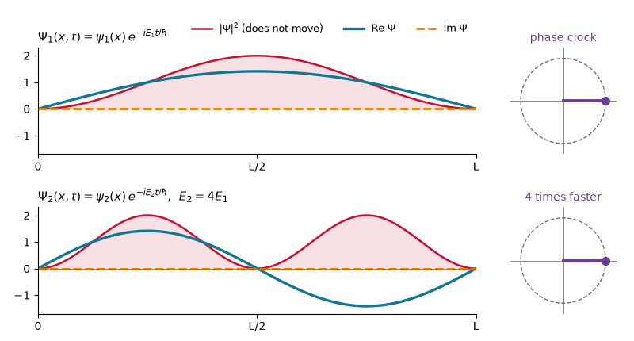
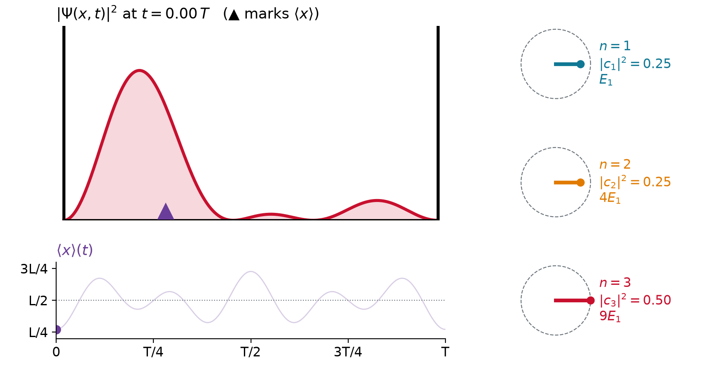
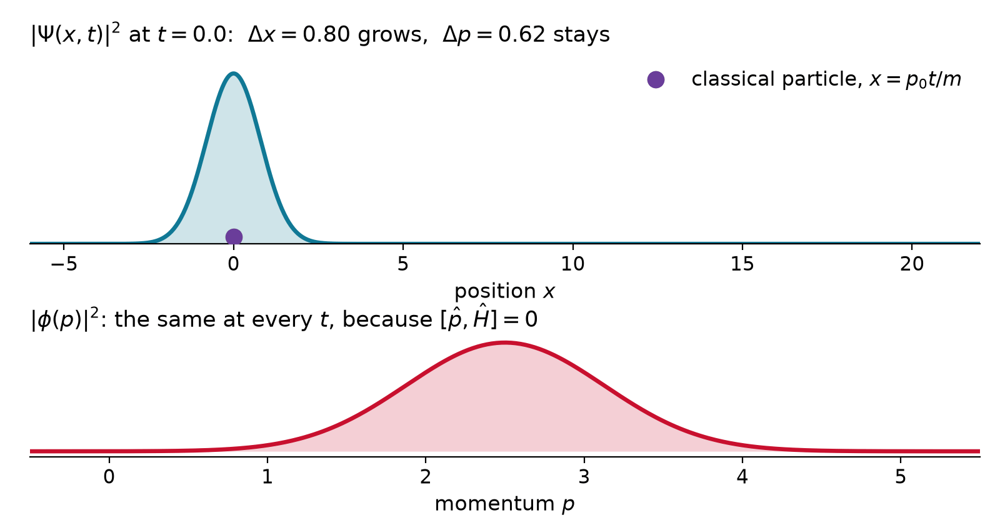
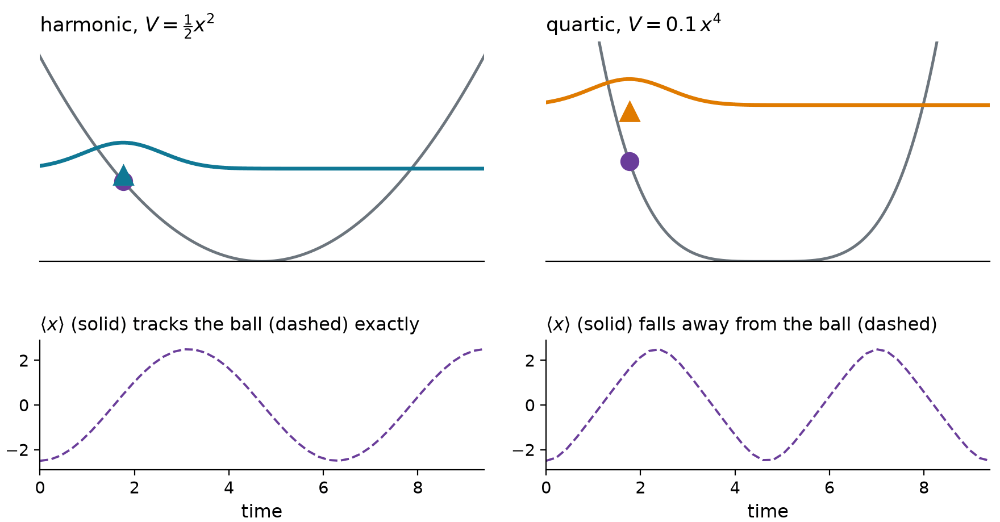
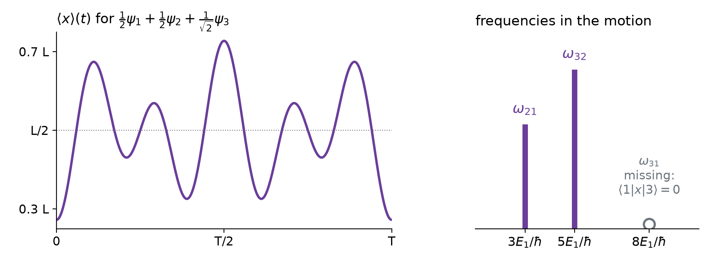
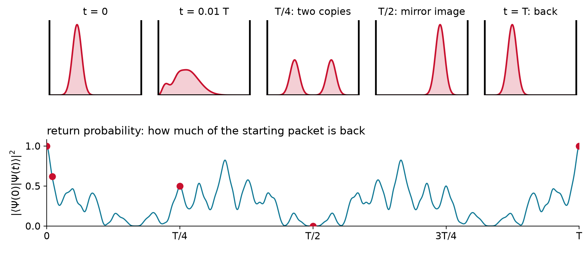
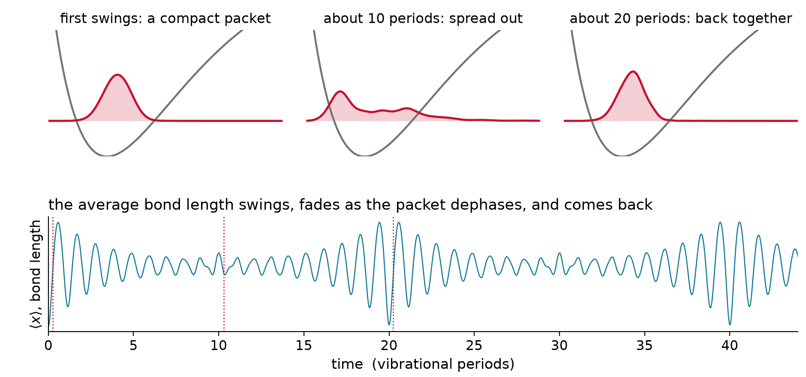

Time Dependence
Chem 3240 · Lecture 3.7
One stationary state: only the phase turns

\Psi_n(x,t) = \psi_n(x)\,e^{-iE_nt/\hbar} \qquad\Longrightarrow\qquad \lvert\Psi_n\rvert^2 = \lvert\psi_n\rvert^2 \ \text{ never moves}
Two states: the density sloshes

\lvert\Psi\rvert^2 = \tfrac{1}{2}\big(\psi_1^2 + \psi_2^2\big) + \psi_1\psi_2\cos\omega t, \qquad \omega = \frac{E_2 - E_1}{\hbar}
- Each term keeps its own clock; the cross term carries the difference of the two phases
One recipe for all motion
\Psi(x,0) = \sum_n c_n\,\psi_n(x) \quad\Longrightarrow\quad \Psi(x,t) = \sum_n c_n\,e^{-iE_nt/\hbar}\,\psi_n(x)
- Expand the starting state in energy eigenstates: c_n = \langle \psi_n \vert \Psi(0) \rangle
- Attach to each the phase of its own clock, e^{-iE_nt/\hbar}
- Add up
- Works because the equation is linear and the eigenstates are a complete basis
Example: does the recipe solve the equation?
Show that \Psi(x,t) = \sum_n c_n\,e^{-iE_nt/\hbar}\,\psi_n(x) satisfies i\hbar\,\partial\Psi/\partial t = \hat{H}\Psi.
i\hbar\,\frac{\partial\Psi}{\partial t} = \sum_n c_n\,i\hbar\left(-\frac{iE_n}{\hbar}\right)e^{-iE_nt/\hbar}\,\psi_n = \sum_n c_n\,E_n\,e^{-iE_nt/\hbar}\,\psi_n
\hat{H}\Psi = \sum_n c_n\,e^{-iE_nt/\hbar}\,\hat{H}\psi_n = \sum_n c_n\,E_n\,e^{-iE_nt/\hbar}\,\psi_n \quad\checkmark
Term by term, using \hat{H}\psi_n = E_n\psi_n. At t = 0 every phase is 1.
Three clocks

- Hand lengths \lvert c_n\rvert fixed; the angles between hands make the motion
Three lines of numpy
x = np.linspace(-10, 10, 600); h = x[1] - x[0]
H = -0.5 * D2 + np.diag(0.5 * x**2) # spring: hbar = m = omega = 1
E, phi = np.linalg.eigh(H); phi /= np.sqrt(h) # 1. diagonalize once
c = phi.T @ psi0 * h # 2. expand a packet released at x = 3
psi_t = phi @ (c * np.exp(-1j * E * t)) # 3. attach the phases, add up- \langle x\rangle = +3.000,\ +0.004,\ -3.000 at t = 0,\ \pi/2,\ \pi: exactly 3\cos t, a classical spring
- The norm stays 1.000000 at every t
What never changes
\lvert c_n\,e^{-iE_nt/\hbar}\rvert^2 = \lvert c_n\rvert^2 \qquad\Longrightarrow\qquad \text{energy probabilities, } \langle E\rangle,\ \sigma_E \text{ frozen}
\langle \Psi(t) \vert \Psi(t) \rangle = \sum_m\sum_n c_m^*\,c_n\,e^{i(E_m - E_n)t/\hbar}\,\delta_{mn} = \sum_n \lvert c_n\rvert^2 = 1
- e^{-i\hat{H}t/\hbar} is unitary: it rotates the state vector, never stretches it
- Only the relative phases change, and all motion comes from them
How an average changes
Product rule, then \partial_t\lvert\Psi\rangle = \hat{H}\lvert\Psi\rangle/i\hbar and \partial_t\langle\Psi\rvert = -\langle\Psi\rvert\hat{H}/i\hbar:
\frac{d}{dt}\langle\Psi\vert\hat{A}\vert\Psi\rangle = -\frac{1}{i\hbar}\langle\Psi\vert\hat{H}\hat{A}\vert\Psi\rangle + \frac{1}{i\hbar}\langle\Psi\vert\hat{A}\hat{H}\vert\Psi\rangle
\frac{d}{dt}\langle A\rangle = \frac{i}{\hbar}\,\big\langle[\hat{H},\hat{A}]\big\rangle \qquad (\hat{A} \text{ not explicitly time dependent})
- Commutes with \hat{H}: a constant of motion
Constants of motion
| observable | [\hat{H}, \cdot\,] with \hat{H} = \hat{p}^2/2m + V | conserved when |
|---|---|---|
| energy \hat{H} | 0 | always |
| momentum \hat{p} | i\hbar\,dV/dx | no force |
| parity \hat{\Pi} | 0 if V(-x) = V(x) | symmetric potential |
| position \hat{x} | -i\hbar\,\hat{p}/m | only while \langle p\rangle = 0 |
- The commutators of Lecture 3.5b now say what moves and what stays
Free particle: x spreads, p stays

- [\hat{p},\hat{H}] = 0: every momentum probability is frozen, while the position spreads
Ehrenfest: averages obey Newton
\frac{d\langle x\rangle}{dt} = \frac{\langle p\rangle}{m} \qquad\qquad \frac{d\langle p\rangle}{dt} = -\Big\langle\frac{dV}{dx}\Big\rangle
- The force is averaged over the packet: the same as at its center only if it is linear in x

Example: a packet in a uniform field
For V = mgx, find \langle x\rangle(t) for a packet released at rest from x_0.
-\frac{dV}{dx} = -mg \ \text{everywhere} \quad\Longrightarrow\quad \frac{d\langle p\rangle}{dt} = -mg, \qquad \frac{d\langle x\rangle}{dt} = \frac{\langle p\rangle}{m}
\langle x\rangle(t) = x_0 - \tfrac{1}{2}\,g\,t^2
The center falls like a stone, whatever the shape. The width still spreads, as for a free packet.
Motion holds only energy differences
\langle x\rangle(t) = \sum_n \lvert c_n\rvert^2 x_{nn} + \sum_{n\neq m} c_m^*\,c_n\,x_{mn}\,e^{-i(E_n - E_m)t/\hbar}, \qquad x_{mn} = \langle\psi_m\vert\hat{x}\vert\psi_n\rangle

- Bohr frequencies (E_n - E_m)/\hbar: the light a sloshing charge absorbs and emits
Example: which frequencies are in the motion?
\frac{1}{2}\psi_1 + \frac{1}{2}\psi_2 + \frac{1}{\sqrt{2}}\psi_3 in a box: which of \omega_{21}, \omega_{32}, \omega_{31} appear in \langle x\rangle(t)?
About the center, \psi_1 and \psi_3 are even, x - L/2 is odd:
x_{13} = \tfrac{L}{2}\int\psi_1\psi_3\,dx + \int\psi_1\big(x - \tfrac{L}{2}\big)\psi_3\,dx = 0 + 0
\omega_{21} = 3E_1/\hbar and \omega_{32} = 5E_1/\hbar appear; \omega_{31} = 8E_1/\hbar does not. A selection rule.
Revivals

T_{\text{rev}} = \frac{2\pi\hbar}{E_1} = \frac{4mL^2}{\pi\hbar}
- E_n = n^2E_1: every phase e^{-in^2E_1t/\hbar} returns to 1 at the same moment
Example: revival in a 1 nm box
How long does an electron in a box 1 nm long take to rebuild any starting state?
T_{\text{rev}} = \frac{4\,(9.109\times10^{-31}\ \text{kg})\,(10^{-9}\ \text{m})^2}{\pi\,(1.055\times10^{-34}\ \text{J s})} = 1.1\times10^{-14}\ \text{s} = 11\ \text{fs}
Twice the box, four times slower: T_{\text{rev}} \propto L^2.
Watching a bond vibrate

- A laser pulse makes a packet of vibrational states: the bond swings. Femtochemistry, Zewail, Nobel 1999. I₂: about 300 fs
- Anharmonic levels: the clocks drift apart (dephasing), then realign (revival)
The postulates, all together
| postulate | in equations | |
|---|---|---|
| 1 | the state is a normalized wavefunction | \langle \psi \vert \psi \rangle = 1 |
| 2 | observables are linear Hermitian operators | \hat{A} = \hat{A}^\dagger, \hat{A}\phi_n = a_n\phi_n |
| 3 | a reading is an eigenvalue; the state becomes its eigenfunction | a_n, then \psi \to \phi_n |
| 4 | probabilities and averages | p_n = \lvert\langle \phi_n \vert \psi \rangle\rvert^2, \langle A\rangle = \langle \psi \vert \hat{A} \vert \psi \rangle |
| 5 | evolution by the Schrödinger equation | \Psi(t) = \sum_n c_n e^{-iE_nt/\hbar}\psi_n |
- The rest of the course applies these five rules to new potentials V(x)
Takeaway
Diagonalize \hat{H} once, and any state’s future follows: expand, attach to each eigenstate its phase e^{-iE_nt/\hbar}, add up. The energy probabilities and the norm never change; the relative phases make all the motion, at the Bohr frequencies (E_n - E_m)/\hbar that spectroscopy measures. Averages obey Newton’s laws, exactly so in a harmonic well, and observables that commute with \hat{H} are conserved.
Chem 3240 · Quantum Mechanics